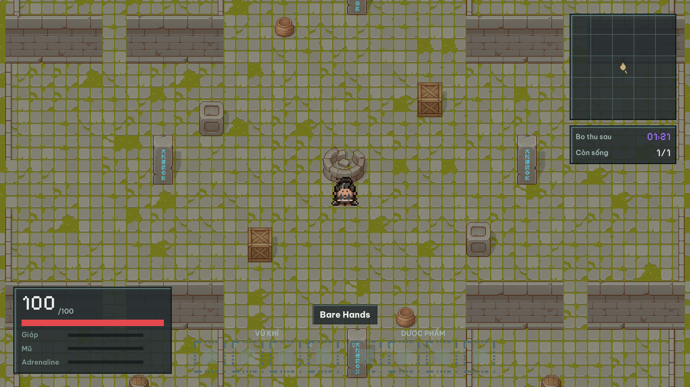
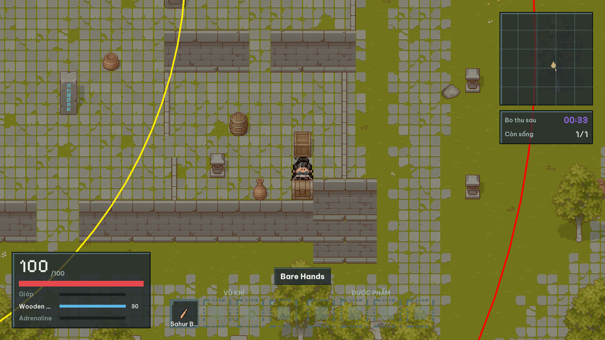
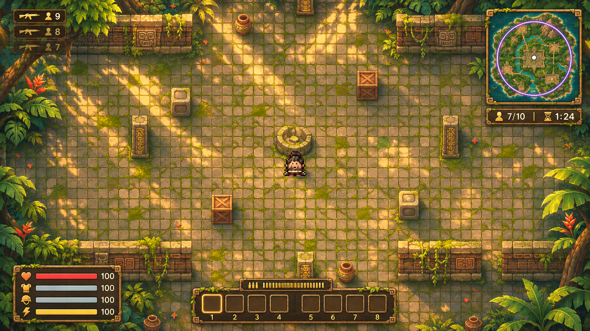
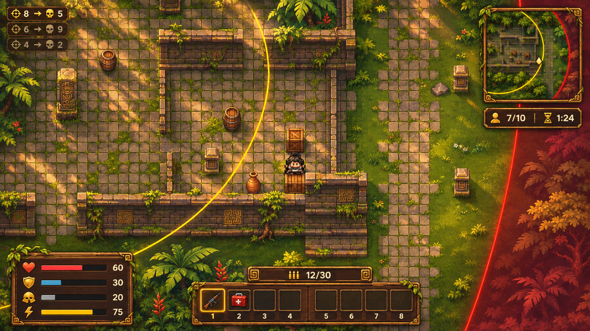
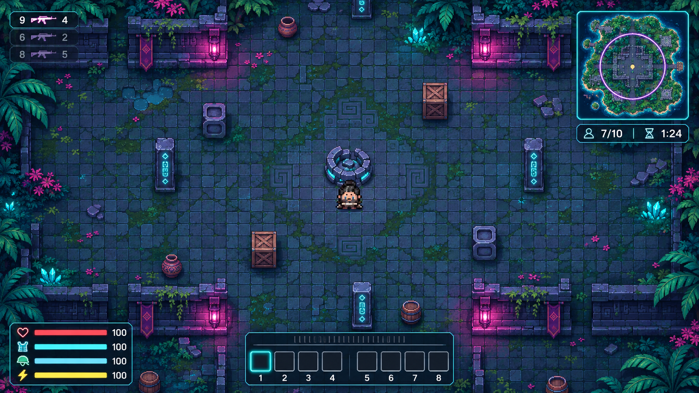
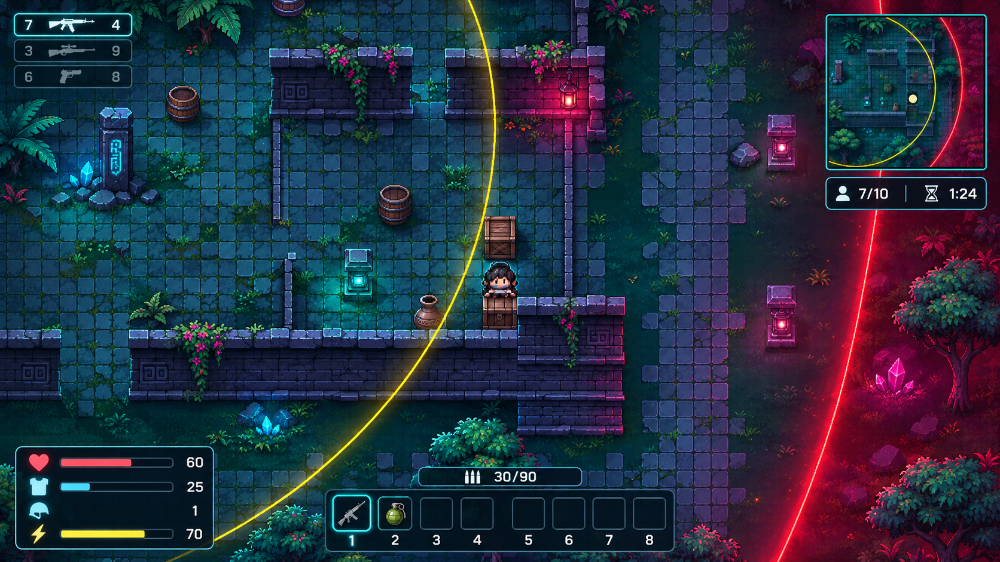
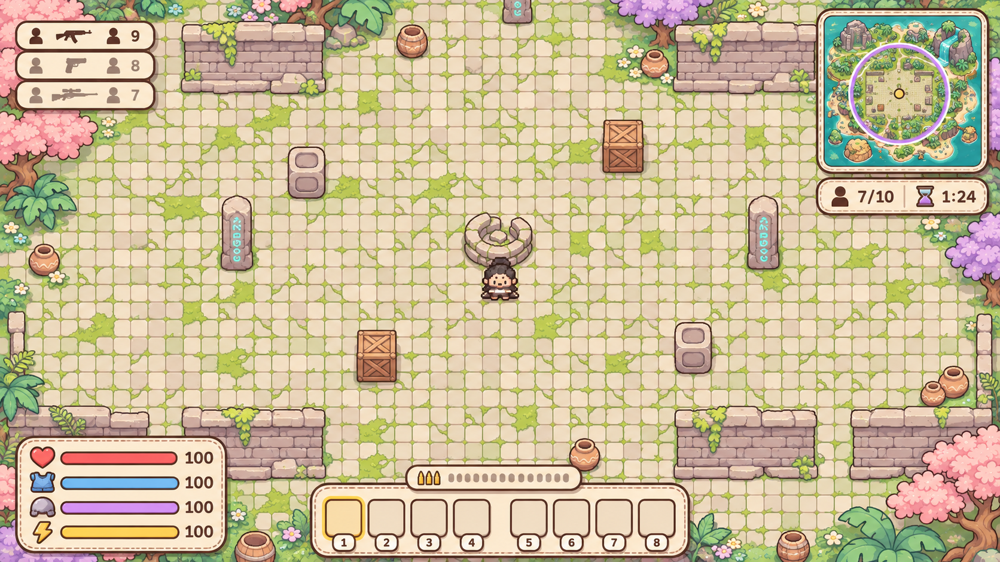
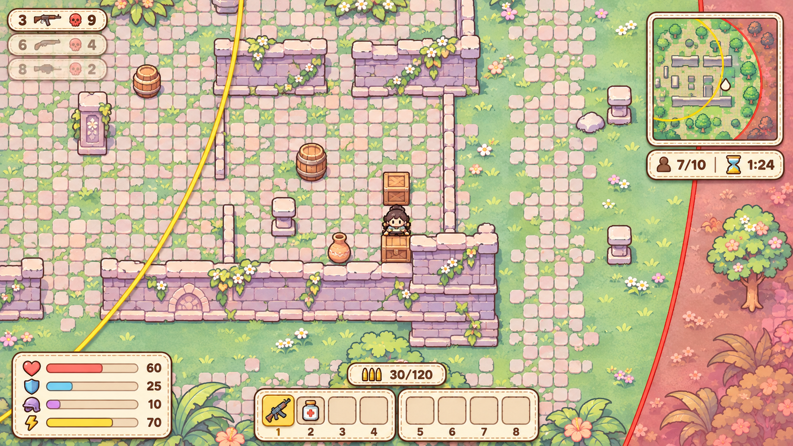
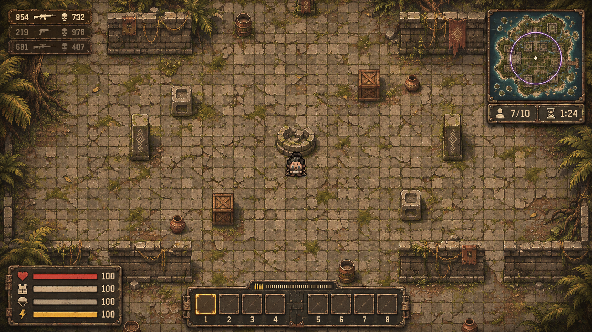
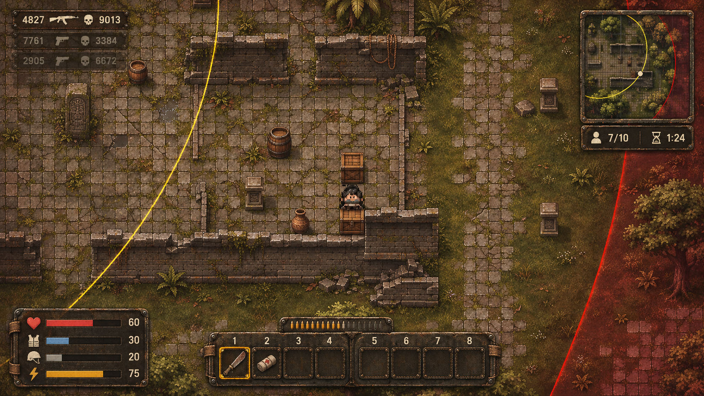

Concept để chọn hướng, không phải asset. Cột trái là ảnh gốc T-010 (HEAD 43c41a98). HUD bản B do GPT vẽ lại, chưa khớp từng chi tiết spec (xem ghi chú cuối). Ảnh 1672x941, chưa đưa vào Assets.
Ảnh chụp Unity Editor, đầu trận và bo thu. Nền phẳng, HUD chữ.


Pixel vẽ tay ấm, nắng chiều xuyên tán lá, đá chạm khắc phủ rêu; HUD là bảng gỗ và đá viền vàng.


Hoàng hôn chàm và xanh ngọc, đèn lồng hồng và pha lê phát sáng; HUD là kính tối viền sáng mảnh.


Pastel mint, đào, tím, viền nâu dày, bo tròn, cảm giác sách tranh; HUD là bảng giấy thủ công.


Màu úa đất, gỉ sét, ánh sáng gắt âm u, hạt phim; HUD là tấm kim loại tán đinh và dây đai.


1) Vitals: cả 4 hướng vẽ 4 thanh có số, trong khi spec B chỉ còn 2 thanh (HP, Adrenaline) và giáp/mũ chỉ icon + số. 2) Killfeed: GPT vẽ icon súng + số lạ (ngoài brief chỉ cho chữ số). 3) Cảnh đầu trận bám ảnh gốc 01, cảnh bo thu bám ảnh gốc 04 (bo vàng, vùng đỏ, nhân vật cạnh hòm) ở cả 4 hướng; so cạnh ảnh gốc 04 ở thư mục ref/. 4) Nhân vật hướng 4 bị răng cưa. 5) Prompt nguyên văn từng ảnh: file spawn.prompt.txt, bo-thu.prompt.txt trong từng thư mục hướng.